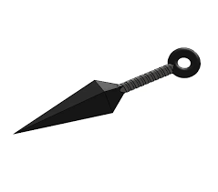

!the rinch!
LOGIN
CARRITO

Descubre el poder del Kunai de Naruto, el arma esencial para cualquier ninja en entrenamiento o experimentado! Este Kunai es una réplica exacta del icónico arma utilizada por los ninjas de la aldea de Konoha en el mundo de Naruto.
Kunai
$49.000
AGREGAR AL CARRITO